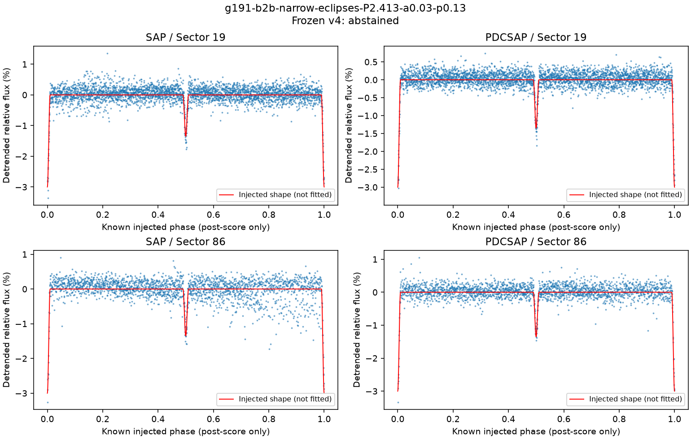
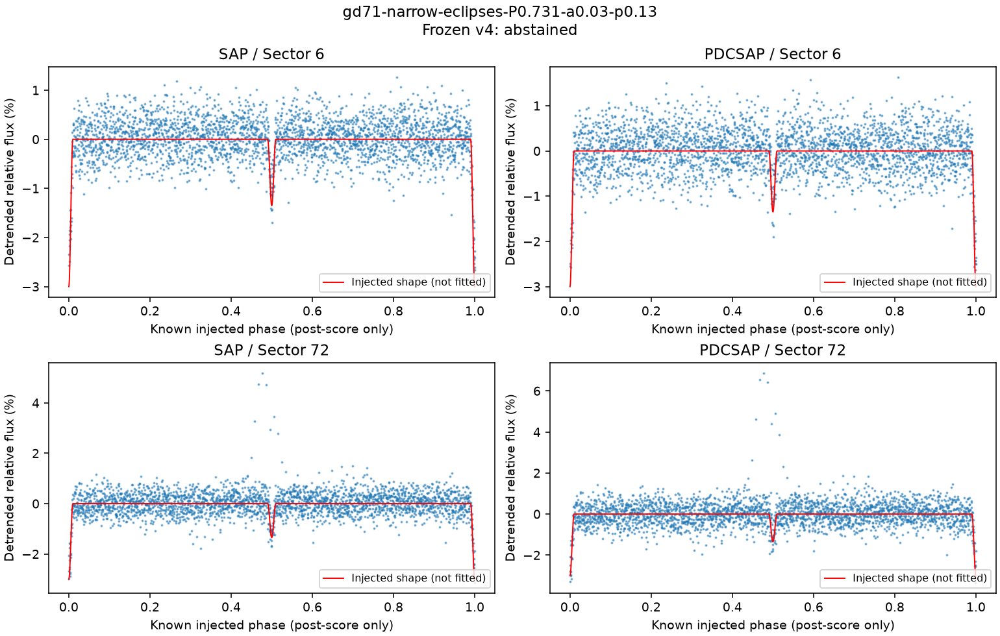
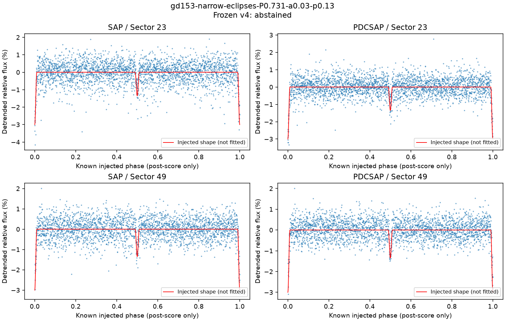

在全量预测与评分保存后，每颗星选取编号最靠前的 3% 窄食失败案例。图按已知注入周期折叠；红线是加入的信号。此图帮助检查失败，不证明程序能够盲找出周期，也不改变评分。
G 191-B2B 的例子：PDCSAP 两段选对；SAP 后一段偏向三倍周期。补充的同类极小比较对数不足，最终弃选。GD 71、GD 153 的例子：真值附近周期已经进入搜索结果，但多数时段的预测改善低于固定的 20% 门槛。这个门槛是开发规则，不是显著性概率。

| 时段 / 产品 | 最接近注入值的周期 / 天 | 预测改善 | 合格 | 该产品最终周期 |
|---|---|---|---|---|
| 19 / SAP | 2.4118873 | 46.2% | True | 2.411887264069781 |
| 19 / PDCSAP | 2.4118628 | 59.1% | True | 2.4118627894832882 |
| 86 / SAP | 2.4124995 | 30.0% | True | 7.236654907224064 |
| 86 / PDCSAP | 2.4122869 | 60.7% | True | 2.4122868503532318 |

| 时段 / 产品 | 最接近注入值的周期 / 天 | 预测改善 | 合格 | 该产品最终周期 |
|---|---|---|---|---|
| 6 / SAP | 0.7311211 | 21.4% | True | 0.7311211011666517 |
| 6 / PDCSAP | 0.7311211 | 14.9% | False | None |
| 72 / SAP | 0.7310458 | 17.9% | False | None |
| 72 / PDCSAP | 0.7310471 | 10.0% | False | None |

| 时段 / 产品 | 最接近注入值的周期 / 天 | 预测改善 | 合格 | 该产品最终周期 |
|---|---|---|---|---|
| 23 / SAP | 0.7310631 | 13.7% | False | None |
| 23 / PDCSAP | 0.7310674 | 17.7% | False | None |
| 49 / SAP | 0.7310574 | 13.7% | False | None |
| 49 / PDCSAP | 0.7310574 | 16.2% | False | None |
| 形状 | 周期 / 天 | 保留峰谷差 |
|---|---|---|
| sine | 0.731 | 100.0%–100.0% |
| sine | 2.413 | 100.0%–100.0% |
| broad-eclipses | 0.731 | 98.8%–99.5% |
| broad-eclipses | 2.413 | 99.9%–99.9% |
| narrow-eclipses | 0.731 | 83.3%–92.8% |
| narrow-eclipses | 2.413 | 98.0%–98.3% |
以上只计算加入信号经过采样窗口平均和 10 分钟分箱后，实际采到的最大峰谷差；未叠加噪声，也不是每一次食的深度下限。